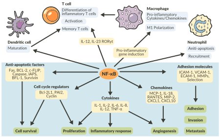

Um fator de transcrição chamado fator nuclear kappa B (NF-κB) funciona como sinalizador da transcrição de muitos genes com atividade pró-inflamatória, e está aumentado em doenças com inflamação aguda e crônica. Esse fator é formado por duas proteínas (p50 e p65) que se juntam mediante um fragmento de DNA (sequência de nucleotídeos). A inibição do NF-κB reduz significativamente processos inflamatórios crônicos e tem sido investigada como possível alvo terapêutico em doenças reumáticas.
Atuação do fator nuclear kappa B (NF-κB) na resposta inflamatória.

Fonte: Liu et al., 2017.